.
집주인이 명절 요리하라해서 이것저것 만들었어
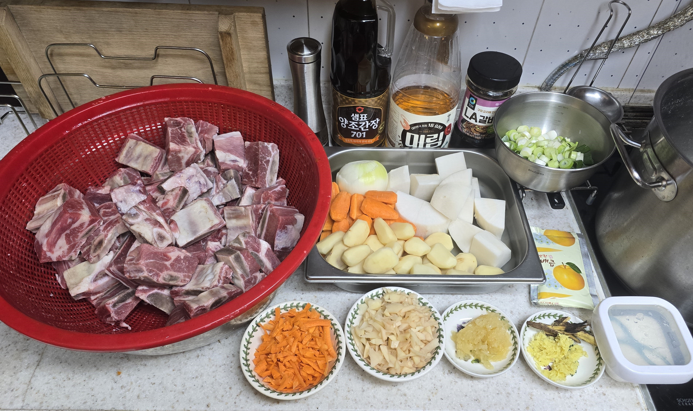
갈비찜 재료
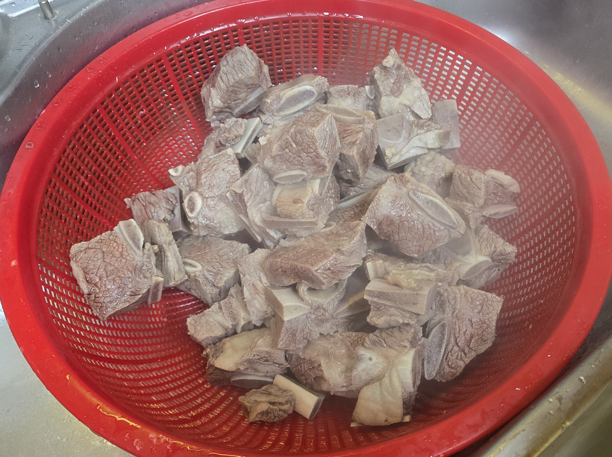
삶는 물에 데치고
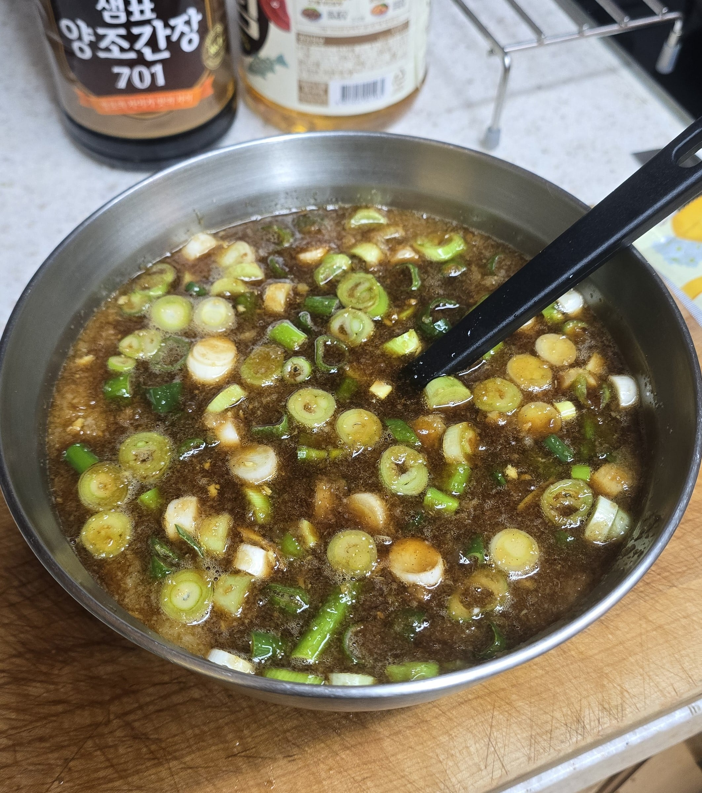
양념 만들고
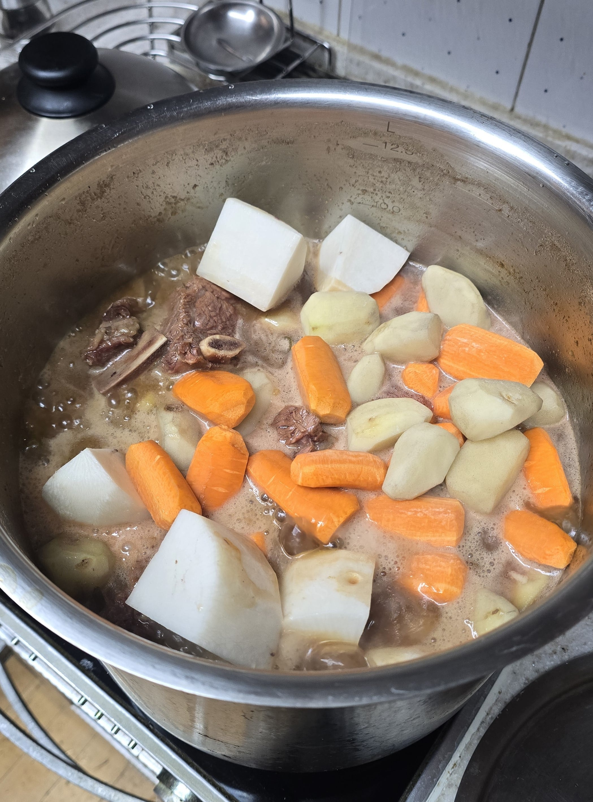
냄비 투하!
완성
색감이 굴라쉬 같다이
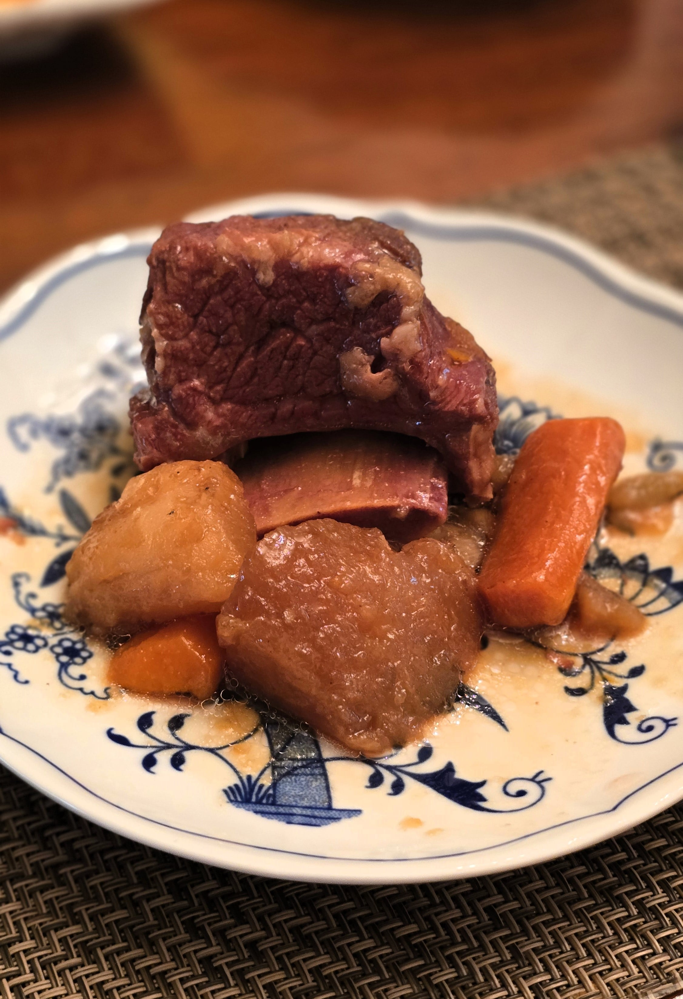
맛잇따이..
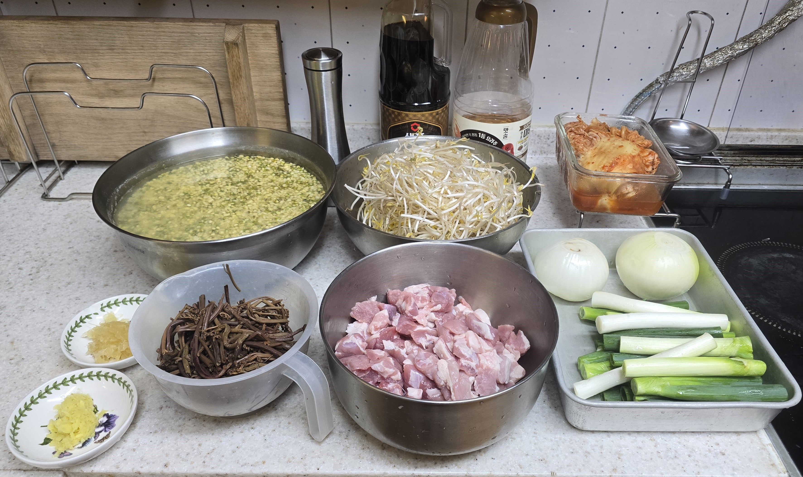
녹두전 ㄱㄱ
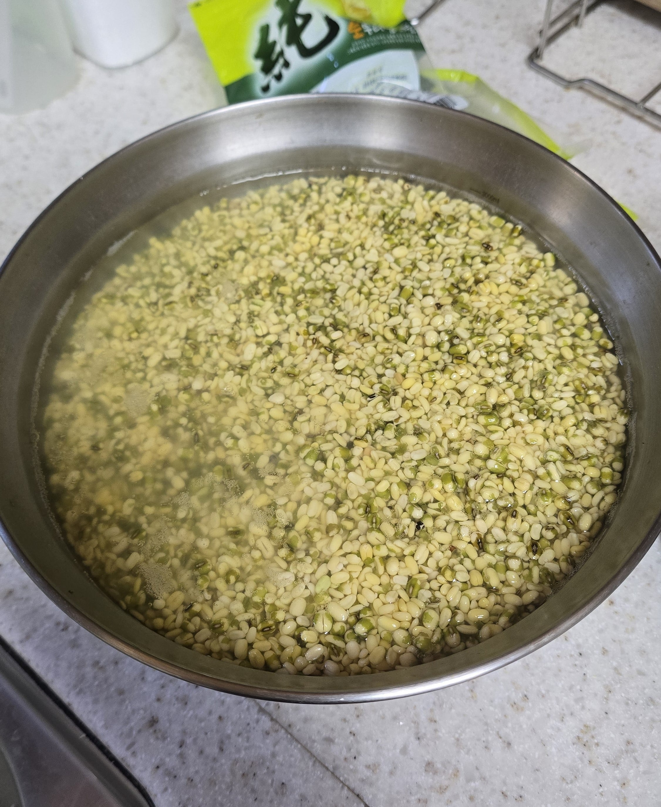
녹두?
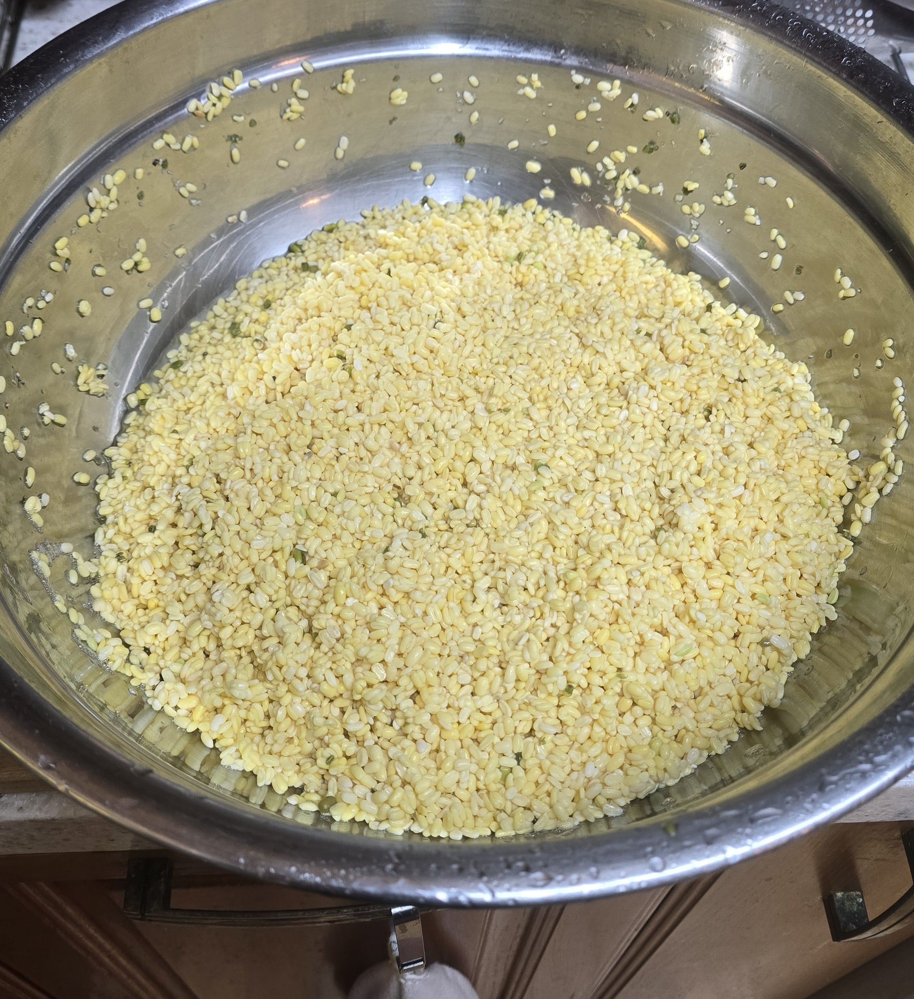
바로 황두로 전직 시키기
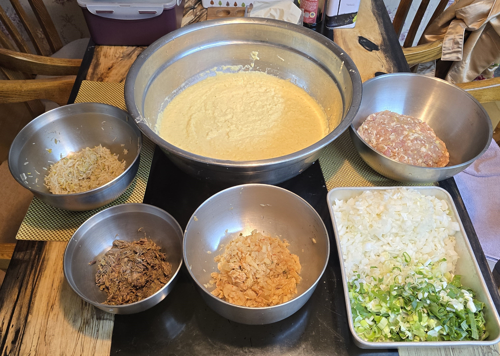
재료 준비완
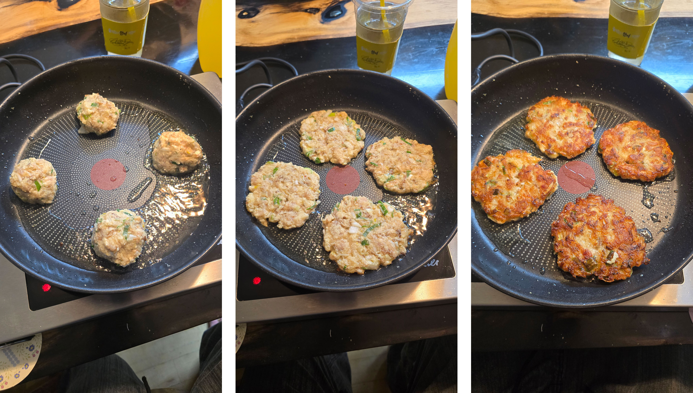
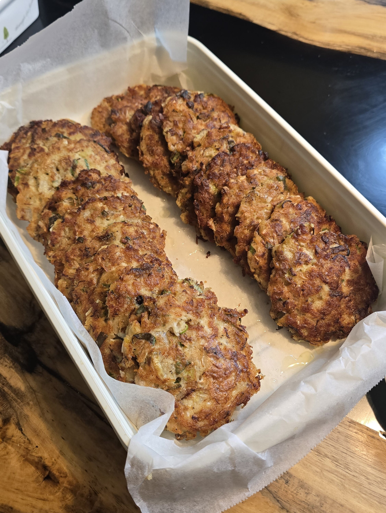
공장on
3시간뒤 탈출 했다
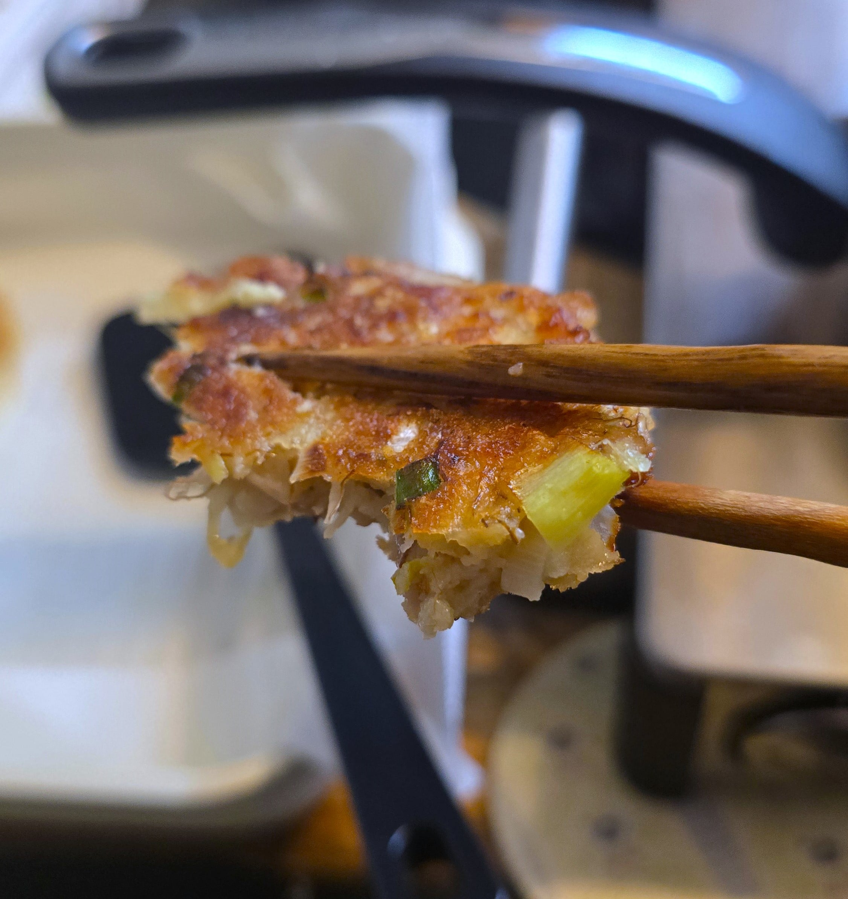
바삭바삭
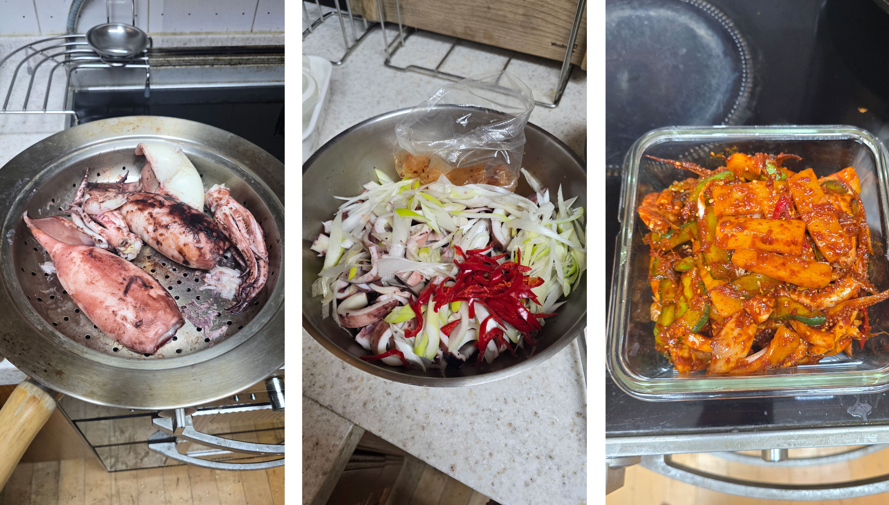
오징어 추무침도 간단하게
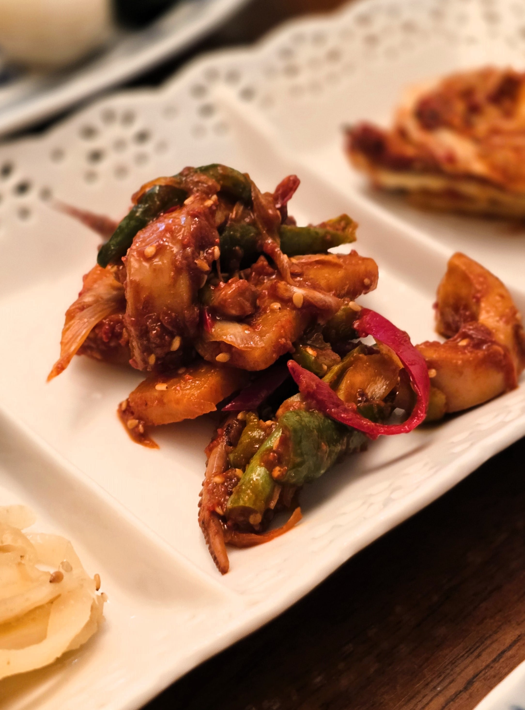
달달 매콤 하다이
지치고 힘들었지만 보람차서
행복해졌어
모두 즐추

이야 요리사구만